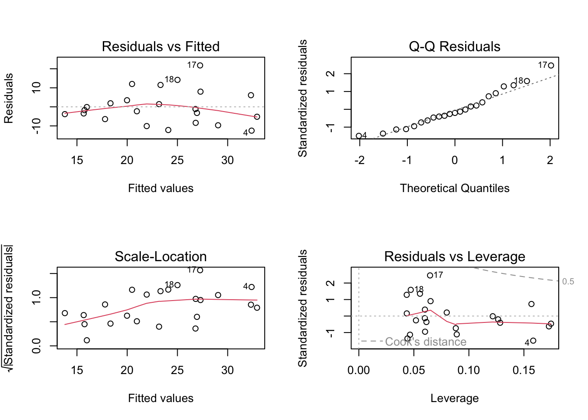

#read in packages from library
library(tidyverse)
library(here)
library(janitor)
library(readxl)
#read in data from data folder
salinity <- read.csv("~/Desktop/ENVS 193DS/Homeworks/Homework 3/ENVS-193DS_homework-03/data/salinity-pickleweed.csv")
Personal <- read_csv("~/Desktop/ENVS 193DS/Homeworks/Homework 3/ENVS-193DS_homework-03/data/My Data ES 193 - Sheet1.csv") #read in my data and relabel Homework 3
Problem 1. Slough soil salinity
a. An appropriate test
The two appropriate tests to determine the strength of the relationship between salinity and California pickleweed biomass are Pearson’s correlation and simple linear regression. Pearson’s correlation simply measures the strength and direction of the linear relationship between two continuous variables salinity and California pickleweed biomass. The simple linear regression treats salinity as the independent (predictor) variable and biomass as the dependent (response) variable, quantifying how much biomass changes with salinity and allowing prediction of biomass from salinity.
b. Create a visualization
#gg plot visualization
ggplot(data = salinity, #use salinity data
aes(x = salinity_mS_cm, #salinity is predictor
y = pickleweed)) + # pickleweed is respinse
geom_point(color = "chartreuse4") + #use different color for points
labs(x = "Soil salinity (mS/cm)", #use labels for points that inlcude units
y = "Pickleweed biomass (g)") +
theme_classic() #change theme 
c. Check your assumptions and run your test
Run test
salinity_model <- lm( #use linear regression to test for relationship
pickleweed ~ salinity_mS_cm, # formula: response ~ predictor
data = salinity # data frame
)
summary(salinity_model) #show summary of test
Call:
lm(formula = pickleweed ~ salinity_mS_cm, data = salinity)
Residuals:
Min 1Q Median 3Q Max
-12.499 -5.819 -1.726 4.794 21.765
Coefficients:
Estimate Std. Error t value Pr(>|t|)
(Intercept) 13.0895 4.0350 3.244 0.00389 **
salinity_mS_cm 2.0832 0.7188 2.898 0.00860 **
---
Signif. codes: 0 '***' 0.001 '**' 0.01 '*' 0.05 '.' 0.1 ' ' 1
Residual standard error: 9.144 on 21 degrees of freedom
Multiple R-squared: 0.2857, Adjusted R-squared: 0.2517
F-statistic: 8.398 on 1 and 21 DF, p-value: 0.008605check assumptions
par(mfrow = c(2, 2))
plot(salinity_model)
I checked the assumptions of normality of residuals using QQplots, and homoscedasticity using residual vs. fitted and scale-location. The QQplot follows a linear trend showing normality of residuals, and both residuals vs. fitted and scale location show random distribution or residuals around the horizontal line demonstrating homoscedasticity.
d. Results communication
To evaluate the strength of the relationship between pickleweed biomass and soil salinity, I used a simple linear regression because because both variables (soil salinity in mS/cm and pickleweed biomass in grams) are continuous, and I was specifically testing whether salinity predicts changes in biomass. The test showed that soil salinity was significantly correlated to pickleweed biomass (linear regression, F(1, 21) = 8.40, R2 = 0.25, p = 0.009, ⍺ = 0.05). From our model coefficient estimates we predict that for each 1 mS/cm increase in soil salinity pickleweed biomass increases by 2.1 ± 0.7(SE) g.
e. Test implications
Our simple linear regression indicates a significant positive linear relationship between salinity (mS/cm) and pickleweed biomass (g) (linear regression, F(1, 21) = 8.40, R2 = 0.25, p = 0.009, ⍺ = 0.05), meaning that inorder for pickleweed plants to be successful they need to be in saltier conditions. This means that in the event of extreme rain or freshwater input plants may struggle to survive and potentially artificial salt addition may be necessary. This study would benefit from further sampling to solidify this relationship, but without a visible plateau in our linear model out planters should lean towards ~7.0 (mS/cm) (where highest pickleweed biomass was recorded) and above.
f. Double check your own work
cor.test(salinity$salinity_mS_cm, salinity$pickleweed, #use salinity data to test for correlation
method = "pearson") #use pearson correlation test
Pearson's product-moment correlation
data: salinity$salinity_mS_cm and salinity$pickleweed
t = 2.8979, df = 21, p-value = 0.008605
alternative hypothesis: true correlation is not equal to 0
95 percent confidence interval:
0.1568265 0.7757682
sample estimates:
cor
0.5344778 The cor.test also shows significant correlation between salinity (mS/cm) and pickleweed biomass (g) (cor = 0.53, t(21) = 2.90, p = 0.009, ⍺ = 0.05). These results led us to the same conclusion of rejecting the null hypothesis that there is no relationship between the variables, however this test does not provide any direction of correlation or differentiate between predictor and explanatory variables, like the linear regression allows for.
Problem 2. Personal data
a.
personal_clean <- clean_names(Personal) #clean column names in personal data
ggplot(data = personal_clean, #use personal data
aes(x = workout_type, # x-axis
y = duration,# y-axis
color = workout_type)) + # color by workout type
geom_jitter(height = 0, # no jitter in the vertical direction
width = 0.3, # smaller jitter in the horizontal direction
alpha = 1, # make the points more transparent
shape = 20, #closed circle shape
size = 4) + #enlarge the shape of the points
scale_color_manual(values = c("Running" = "aquamarine3", #give a unique color to each type of workout
"Biking" = "cyan4",
"Gym" = "slateblue",
"Surfing" = "blue",
"Climbing" = "darkorange",
"Tennis" = "green")) +
labs(title = "Fig. 1 Duration of the workout based on type of exercise completed", #title
x = "Workout Type", #x-axis title
y = "Duration (hr:mm:ss)",
subtitle = "2/26/2026") + #y-axis title including units
theme_bw() + #theme black and white
theme(legend.position = "none", # getting rid of the legend
plot.title = element_text(size = 12)) # making the title font smaller
Extra Analysis for personal interest
running_data <- personal_clean %>% #use to personal_clean data and filter to only include rows with the workout type equal to running
filter(workout_type == "Running")
ggplot(data = running_data, #use the clean name version of personal data
aes(x = distance_mi, # x-axis
y = pace)) + #y-axis
geom_point(color = "cornflowerblue") +#color the points
labs(title = "Fig 2. Running Mileage vs. pace", #title
x = "Distance (mi)", #x-axis title
y = "Pace (h:mm:ss)", #y-axis title
subtitle = "2/25/2026") + #add subtitle that is the date of the last recorded observation
theme_minimal() + #different theme from default
theme(plot.title = element_text(size=12)) #change title font size
b. Captions
Figure 1. Jitterplot of workout duration categorized by type of workout Points represent measurement for duration of workout and are colored according to workout type: Biking, climbing, gym, running, surfing, tennis. Data collected by the author from 1/15/2026 - 2/26/2026. Accessed via csv download.
Figure 2. Scatterplot of running distance against average pace for the duration of the workout Blue points represent average pace of workout (h:mm:ss) at different mileage totals. Data were collected by the author from 1/15/2026 - 2/25/2026 as noted in subtitle. Accessed via csv download.
Problem 3.
Problem 4. Statistical crituqe
a. Revisit and summarize
An ANOVA or analysis of variance test is included in this paper as well as a Multivariate analysis of variance or MANOVA. The predictor variable is the year, and the response variable is the cover of species within a respective conservatism class (A-0, 1-3, 4-6, 7-10) that indicates how able to species is to thrive in altered environments. The ANOVA test used in this study addresses the question presented by the author by establishing if there was a significant change in species composition over the period of interest. A significant result would be a significant change in each conservatism class size between 1986 and 2019. insert table from homework 2 here
b. Visual clarity
The table clearly represents the data from the tests by appropriately labeling and organizing all information by conservatism class. This allows for the reader to start by looking at the overall or MANOVA results at the top and then go through each class to see if there was significance at each level. I will say the MANOVA is not clearly labeled forcing the reader to look at the caption to understand the first few rows.
c. Aesthetic clarity
The authors did a good job at mitigating visual clutter but there is some repetition present. For ANOVA conservatism class is bolded and clearly not part of the table depicting results which is good. For the MANOVA the variables are also bolded but this section is not titled. Additionally variables for the ANOVA are not bolded and are re-listed for every conservatism class which is a bit repetitive. Significant results are signaled with an asterisk but that information is also repetitive as the p-value being so small clearly shows significance.
d.
Firstly I would actually separate the MANOVA and ANOVA tables and add a title to the section displaying the MANOVA results so that it is uniform with the titles of the ANOVA results and differentiates it as a separate test. I would also bold the variables used in the ANOVA test and only list them once on the table as they remain the same for each proceeding test. Finally I would shrink the column for degrees of freedom as it has a lot of empty space and remove the asterisk from the p-value instead listing it as <0.001.